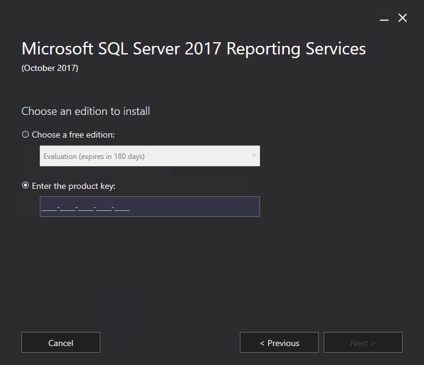
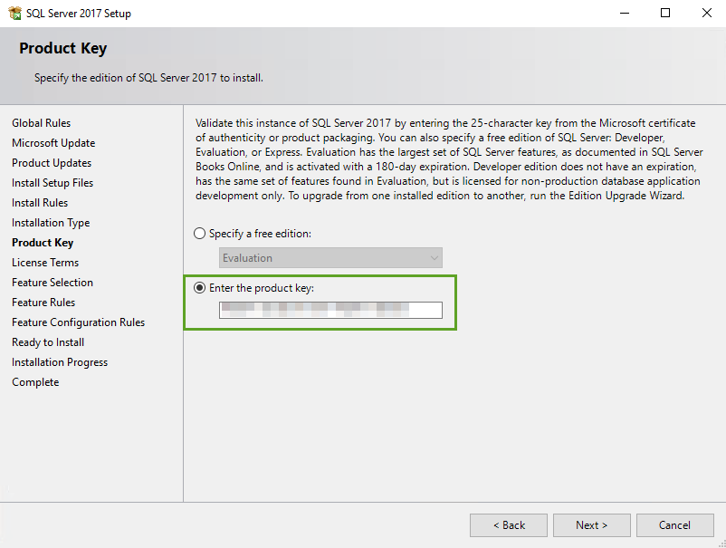

Where is the SQL Server 2017 Reporting Services License Key??
SQL Server 2017 Reporting Services is no longer bundled with the main SQL Server installer, so if you’re looking to add the Reporting Services 2017 feature, you need to run the stand-alone installer.
When you run said installer, you’ll be presented with a dialog asking for a product key.

But uhhhh… Where is it?
Naturally, we went to our Volume Licensing Portal, but Reporting Services 2017 isn’t listed.
Additionally, we looked for a SQL Server 2017 key, but the portal indicated that our copy of SQL Server “didn’t require” a product key.
Why? Because it’s embedded into the SQL Server 2017 installer itself.
Bingo.
Re-run the SQL Server 2017 Installer
If you re-run the SQL Server 2017 installer, and just Next Next Next to the Product Key screen, you can copy and paste the key from there.

Simple. Hopefully this saves you 30 minutes running around to different portals trying to find a key that’s “hidden” right in front of you. 👍
comments powered by Disqus